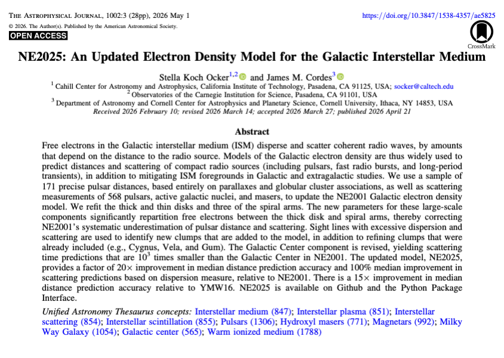
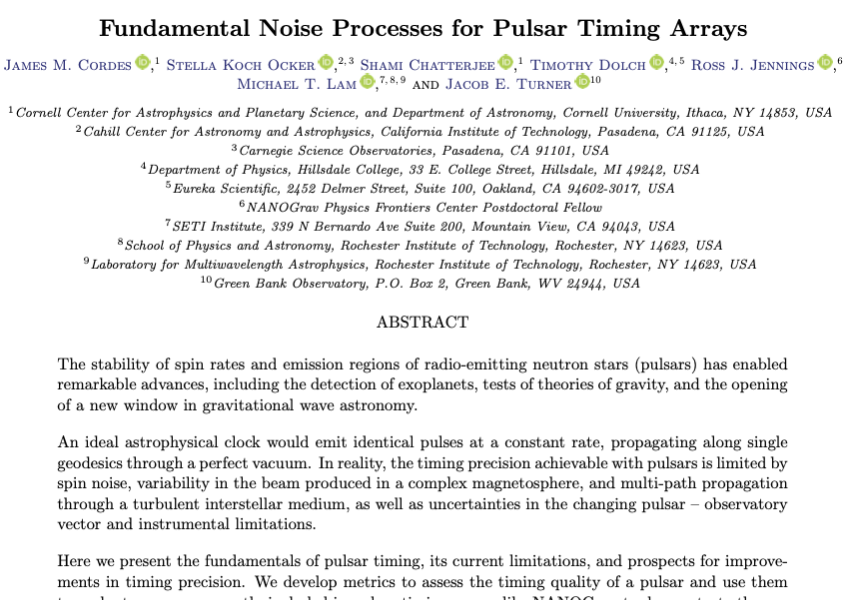
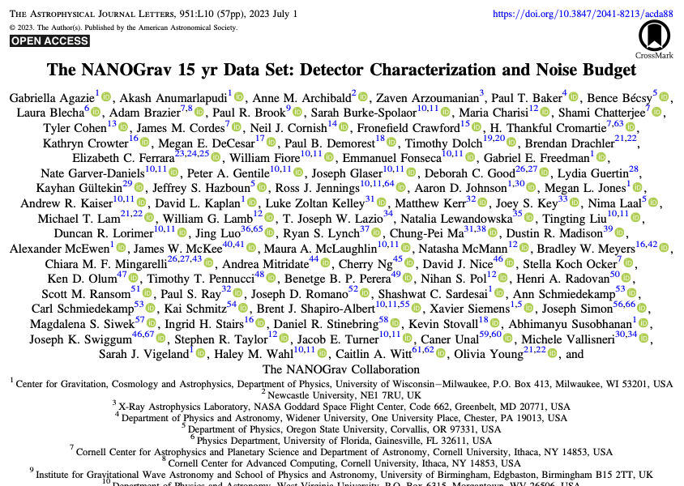
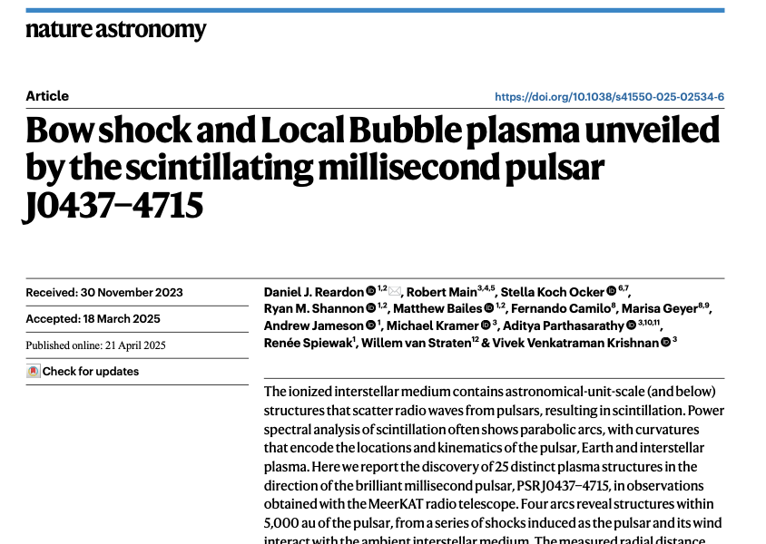
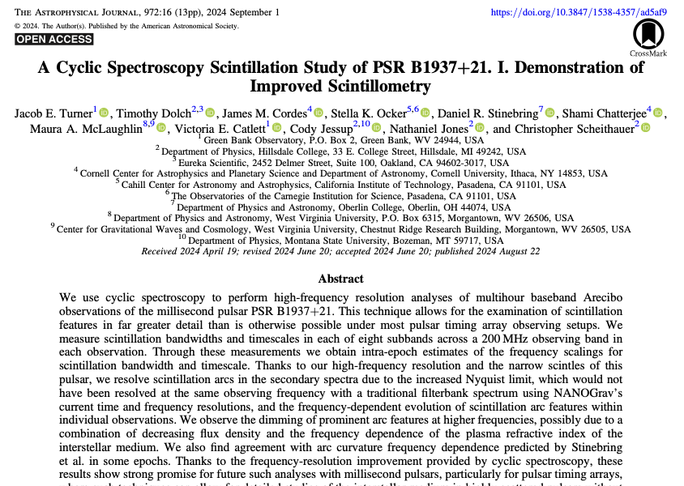
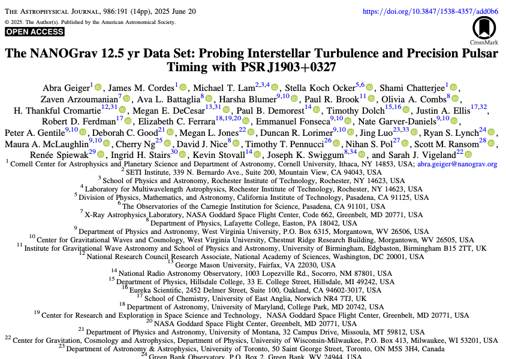

The interstellar medium (ISM) is one of the main sources of noise in pulsar timing experiments hunting for gravitational waves. As a long-time member of the NANOGrav Collaboration, and current co-chair of the Noise Budget Working Group, I have pursued a number of studies seeking to understand and mitigate ISM-induced noise for gravitational wave experiments.
I first joined NANOGrav as an undergraduate researcher at Oberlin College, before transitioning to associate and then full membership while a graduate student at Cornell. In 2026 I became co-chair of the Noise Budget Working Group. Throughout this time, I have worked to understand and characterize the noise budget for our pulsar timing array, with a primary emphasis on the ISM. Below you can find a subset of relevant studies that I have led or contributed to; for a complete list please see my CV linked above.

Ocker & Cordes 2026: An updated electron density model of the Galactic ISM that predicts pulsar distances and scattering strengths. The model is being actively used to optimize pulsar searches for pulsar timing arrays, as well as to predict scattering properties for various pulsars.

Cordes, Ocker et al. (in review): A comprehensive (~200 page) review of all noise processes relevant to pulsar timing. In addition to reviewing the state-of-the-art and deriving many fundamental quantities, a number of recommendations are made to optimize pulsar timing arrays.

NANOGrav Collaboration 2023: The detector characterization and noise budget for the NANOGrav 15-yr dataset, which was our first dataset to show evidence of the stochastic gravitational wave background.

Reardon et al. 2025: Monitoring the brightest, nearest millisecond pulsar J0437-4715 with the MeerKAT telescope reveals the pulsar scintillating through dozens of discrete plasma screens along the line-of-sight, including within the pulsar's bow shock.

Turner et al. 2024: Cyclic spectroscopy is used to measure the scintillation properties of the millisecond pulsar B1937+21, revealing multiple scintillation arcs and validating the technique's utility for routine measurements of scintillation for NANOGrav.

Geiger et al. 2025: The most highly scattered pulsar in the NANOGrav array, J1903+0327, is examined in detail. The pulse broadening is precisely constrained and is revealed to vary on refractive timescales.